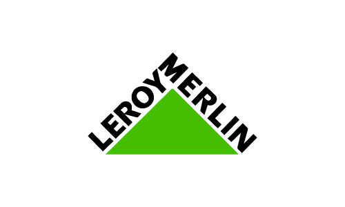
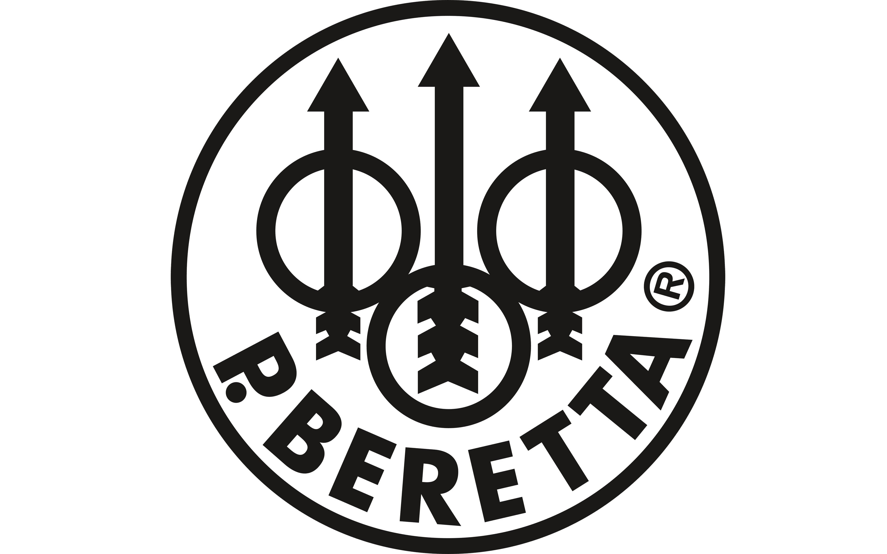

Esperienza presso BitBang
Durante l’anno di 5C IN, ho avuto l'opportunità di svolgere il mio PCTO presso BitBang, un'azienda che si occupa di digital analytics, data strategy e business intelligence per grandi imprese. È un ambiente molto dinamico e orientato all’innovazione.
Nel ruolo, ho collaborato al team di software developing, analizzando i siti di aziende di rilievo come Leroy Merlin, Pirelli e Beretta. L’obiettivo era individuare possibili miglioramenti in termini di performance e user experience. Questa esperienza mi ha permesso di approfondire strumenti e metodologie del mondo dello sviluppo web e dell’analisi dei dati.
 